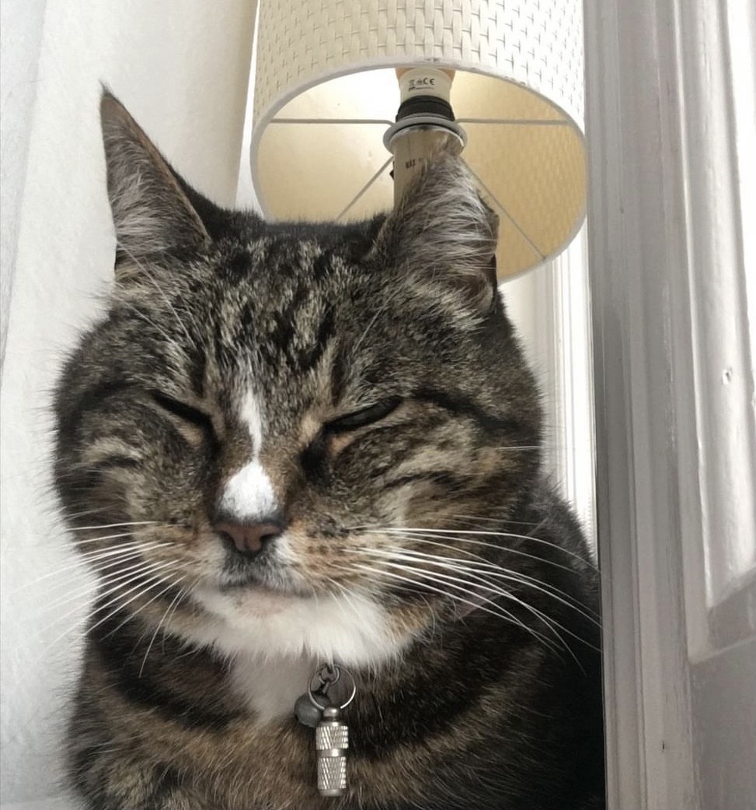
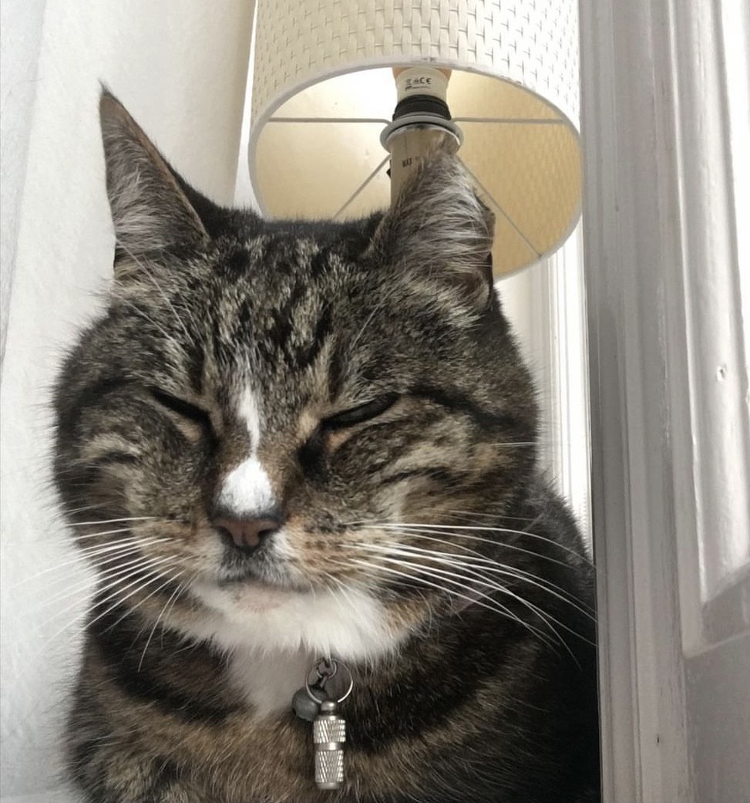

Ik heet Annalin Smedes. Ik woon sind mijn 2de in Zuidhorn en ik ben nu 14 jaar oud. Ik ben geboren op 14 november 2006. Ik heb een broer (16) en een zusje (13) en mijn ouders zijn gescheiden sinds 2012.
Ik heb een vrij grote familie. Ik heb 4 stiefzussen en 2 stiefbroers van mijn stiefvaders kant. Mijn jongste stiefzus is nog 16 en komt om het weekend bij ons. De andere 5 zijn allemaal 18+ en zie ik iets minder vaak. Een van mijn stiefzussen heeft een zoontje en een van mijn stiefbroers heeft een zoontje en een dochter. Ik ben dus een soort van stieftante. Mijn stiefmoeder heeft geen kinderen. Wel komt mijn stiefmoeder uit Duitsland wat wel leuk maar ook uitdagend is omdat ik Engels tegen haar moet praten. Ik heb veel contact met de familie van mijn vaders kant omdat mijn nichten rond dezelfde leeftijd zijn als mij, mijn broer en mijn zusje.
Qua huisdieren heb ik 2 katten, 3 knaagdieren en kippen. Mijn katten heten Sammie (9 jaar) en Indi (20 jaar) Bij mijn moeder heb ik een vrij grote tuin dus daar is gelukkig plek voor. We hebben tijdelijk een schildpad in huis die mee is gekomen van mijn stiefvaders oude huis. Om het weekend komt er een hondje mee met mijn stiefzus die dan bij ons blijft. Dit zijn mijn katten:
.jpg) 

Ik zit op het CSG augustinus in Groningen. Ik zit in de klas H4E. Mijn broer en zusje zitten ook op deze school. Mijn broer zit in vwo 5 en mijn zusje zit in havo 2. Mijn school ligt ongeveer 12 kilometer van mijn huis af. Ik probeer zo veel mogelijk te fietsen maar ik ga in de winter met de bus of trein. Op school heb ik een vrij lang rooster. Dit is mijn rooster van de week 20 sep t/m 24 sep:
| Maandag 20-9 | Dinsdag 21-9 | Woensdag 22-9 | Donderdag 23-9 | Vrijdag 24-9 |
|---|---|---|---|---|
| Geschiedenis | Vrij | Informatica | Aadrijkskunde | Vrij |
| Vrij | Wiskunde | Informatica | Geschiedenis | Vrij |
| Aadrijkskunde | Nederlands | Vrij | Vrij | Economie |
| Informatica | Engels | Vrij | Economie | Vrij |
| Wiskunde | Godsdienst | Wiskunde | Vrij | Vrij |
| Economie | Aadrijkskunde | Vrij | Vrij | Nederlands |
| Engels | Geschiedenis | Engels | Maatschappijleer | Gym |
| Nederlands | Mentorles | Maatschappijleer | Nederlands | Gym |
Qua hobby's heb ik een paar dingen die ik leuk vindt om te doen. Ik vindt het altijd gezellig om met vrienden af te spreken. Ook doe ik graag mijn nagels en kijk ik vaak series en films. Een van mijn favoriete films is de Titanic. Hier is de youtube trailer ervan: Titanic 3D Official Trailer 2012. Ik heb heel wat sporten gedaan en geprobeerd, maar ik kan geen sport bedenken wat ik echt leuk vindt. Wel zou ik bijvoorbeeld willen hardlopen of naar de sportschool gaan. Als ik in november 15 wordt ben ik van plan om te werken. Naast dat ik wil gaan werken doe ik nu ook klusjes voor mijn ouders voor wat geld. Denk aan kozijnen schilderen of auto's wassen.